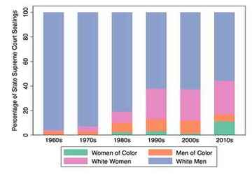

Greg Goelzhauser
Data
State Supreme Court Justices
Background information on all state supreme court justices seated from 1960 through 2016.
 Related PublicationsIntersectional Representation on State Supreme Courts
In Open Judicial Politics, Oregon State University Press (2020)
Judicial Merit Selection: Institutional Design and Performance for State Courts
Temple University Press (2019)
Choosing State Supreme Court Justices: Merit Selection and the Consequences of Institutional Reform
Temple University Press (2016)
Diversifying State Supreme Courts
Law and Society Review (2011)
The Brennan Center for Justice also uses these data.
U.S. Supreme Court Case Complexity
Latent complexity measure for Suprmeme Court cases from 1954 through 2017.
 Related Publication
Related PublicationMeasuring Supreme Court Case Complexity
Journal of Law, Economics, and Organization (forthcoming)
[Coauthored with Benjamin Kassow and Douglas Rice]